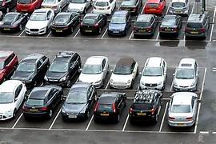

About Project
popular computer vision library, to enable vehicles to park autonomously. OpenCV is utilized to process real-time camera feeds, detecting and tracking vehicles. The parking lot is divided into individual spaces and OpenCV updates their occupancy status. Flask, a web Framework , Provides a user interface to display the parking lot layout and real-time parking space status. user can view available spaces, and if integrated,even reserve them through the web interface. This Project showcase a minimalistic yet powerful implementation of AI and web technology to streamline parking management without the need for additional technologies .
✔ The OpenCV library analyzes the footage and identifies the available parking
spaces in the lot.
✔The system is designed to be highly accurate, and it can detect small and large
vehicles, even in low-light conditions.